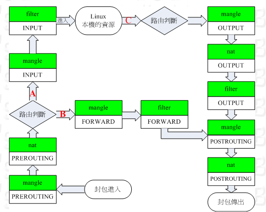
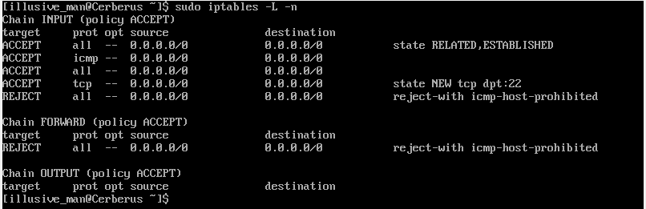
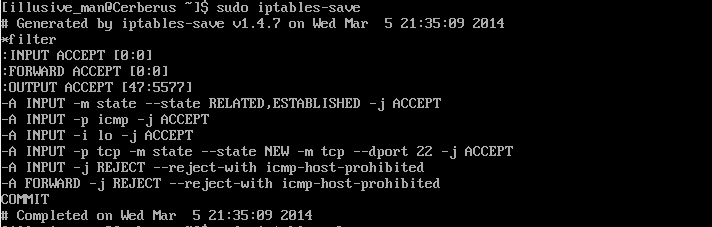

Netfilter 封包過濾機制
Linux 內建立 Netfilter 防火牆機制 所謂 Netfilter 既通過 分析網絡封包 進行放行/抵制 (因為是內建功能 故效率很高) Linux 提供 iptables(Linux2.6開始) 軟體 管理 Netfilter 防火牆機制
主要過程
1 Netfilter根據iptables規則 依次比對規則 2 若 符合 ACCEPT 放行 3 若 符合 DROP 阻擋 4 檢索完所有規則 無配對的 安裝預訂規則處理
chain 鏈
iptables 由多個 table 組成 每個table 用於分析不同的 數據 可以對不同table 設置不同的 規則
table
iptables默認至少 存在如下三個table filter(過濾器) [和計入Linux本機的封包有關] INPUT [主要根進入Linux本機的封包有關] OUTPUT [主要根Linux本機發送到封包有關] FORWARD [餘Linux本機無關 可以 轉遞封包 到後端的設備] nat(位址轉換) [根本機無關 主要與Linux主機後端的網絡內設備有關] PREROUTING [在進行路由判斷前要進行的規則(DNAT/REDIRECT)] POSTROUTING [...[SNAT/MASQUERADE]] OUTPUT [餘發送到封包有關] mangle(破壞者) [餘特殊的封包路由旗標有關] PREROUTING OUTPUT INPUT FORWARD 
filter 本機鏈 filter鏈 主要設置與Linux本機 相關的封包規則
查看規則
iptables -L -n [--line-numbers] -L //後接要查看的分支 不填 查看全部 -t //後接要操作的table 如 nat filter mangle (省略此參數 則為 filter) -L //列出目前的 table 規則 -n //不進行ip與hostname的反查(會快很多) -v //列出更多信息 包括封包位元 相關路由界面... --line-numbers //顯示行號  target 處理方式 ACCEPT(放行) REJECT(拒絕) DROP(丟棄) prot 封包協議 主要有 tcp udp icmp ... opt 額外說明 source 規則針對哪個來源的ip(從哪來) destination 針對哪個目標id(到哪去) 上面地址 0.0.0.0 是用於本地迴路的測試ip(lo)
iptables-save
 以 filter...開頭 指明 chain 後接 預定規則如 :INPUT ACCEPT //INPUT的預定義規則為 ACCEPT 後面接規則 -A 後接 INPUT/OUTPUT... 分支 -j 後接處理方式 -p 後接協議 --dport 後接端口
規則管理
iptables [-t tables] [-FXZ] //清空規則
-F //清除所有的已定義規則 -X //殺掉所有使用者 "自定" 的 chain(table) -Z //將所有的 chain 計算流量統計歸零
清除指定規則
//清除第4條 INPUT 規則 iptables -D INPUT 4 //根據 iptables-save 中記錄的規則 定義 刪除 規則 (將iptables-save 中的-A 替換為 -D 接在 iptables後即可) iptables -D INPUT -p tcp -m tcp --dport 3306 -j ACCEPT
iptables [-t tables] -P [INPUT | OUTPUT | FORWARD] [ACCEPT DROP ] //設置預訂規則
iptables [A|I chain(table 名) [number(插入位置 索引從1開始)]] [-i|o 網絡界面] [-p 協議] [-s 來源ip/網域] [-d 目標ip/網域] -j [ACCEPT | DROP | REJECT | LOG] //設置規則
-AI 針對某個chain的規則 操作 -A 新增規則到最後 -I 插入一個規則 若為指定插入位置 插入到最前 -io 網絡界面規範(需要和 chain 配合) -i 封包進入的界面 如 eth0 lo ... -o -p 協議(tcp udp icmp all ...) -s 來源 ip/網域 -s 192.168.0.100 (ip) -s 192.168.0.0/24 192.168.0.0/255.255.255.0 (網域) -s ! 912.168.0.100 (!取反) -d 目標 ip/網域 -j 處理方式
--sport --dport
在對tcp udp制定協議時 可以 加上 端口限制 如 iptables ... -p tcp --sport 1024:65534 --dport ssh ... iptables ... -p tcp --dport 22 ... iptables ... -p tcp --dport 1:22 --syn ... //針對tcp的syn包